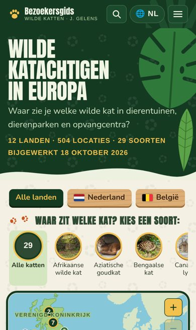
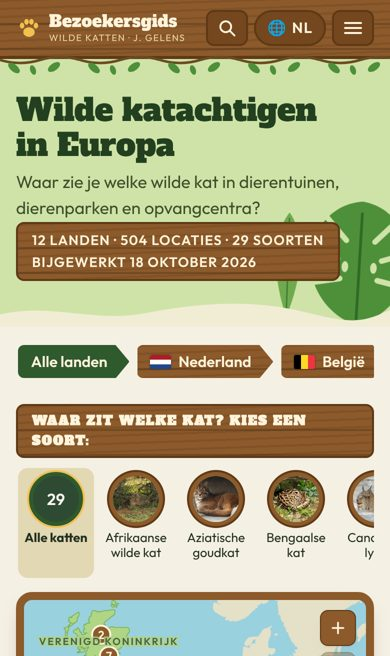
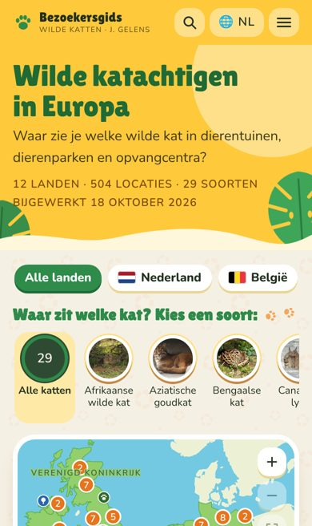

1 · Expeditie
Donker junglegroen met grote bladeren en vage luipaardvlekken, stoere hoofdletters, houten landenbordjes en goudgele accenten.
Open voorbeeld 1Dit is je huidige Europa-startpagina met alleen een andere vormgeving. De indeling en inhoud zijn hetzelfde, en alles werkt zoals op je site. Open een voorbeeld om rond te kijken.

Donker junglegroen met grote bladeren en vage luipaardvlekken, stoere hoofdletters, houten landenbordjes en goudgele accenten.
Open voorbeeld 1
Houten kop- en onderbalk met een liaan, landen als wegwijzers, pootjespad, een kaart in een houten lijst en een letter zoals op parkborden.
Open voorbeeld 2
Zonnig geel met een zon en bladeren, ronde witte knoppen, oranje stippen op de kaart en een groene onderbalk.
Open voorbeeld 3